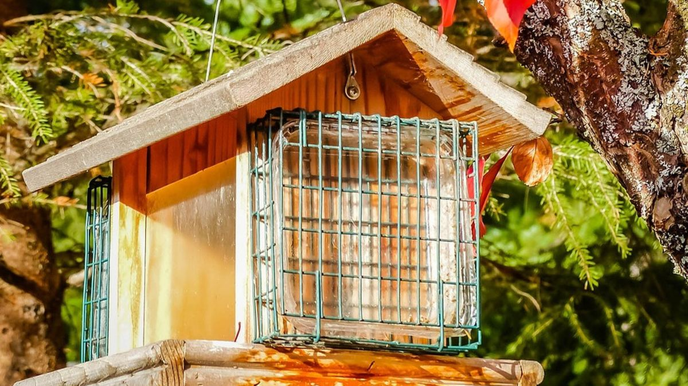
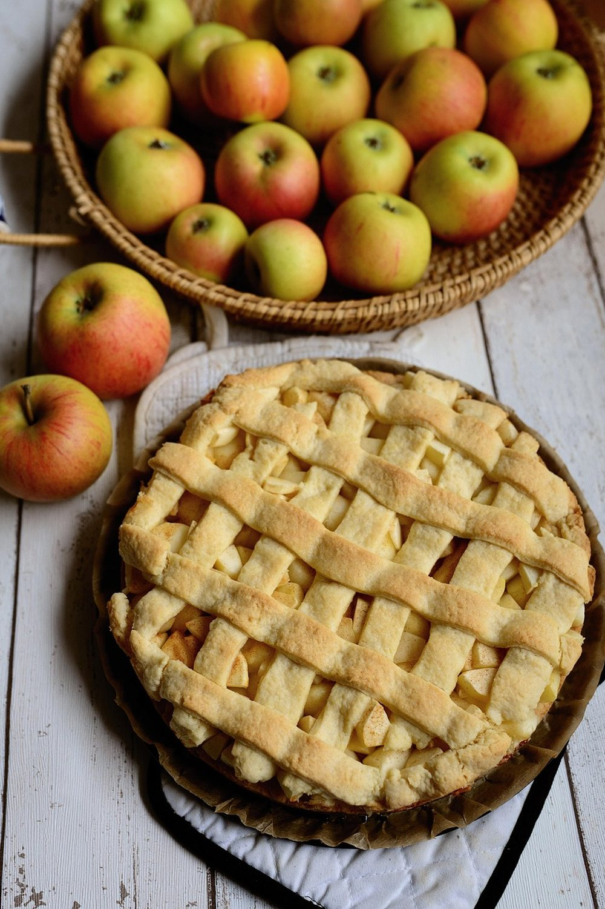
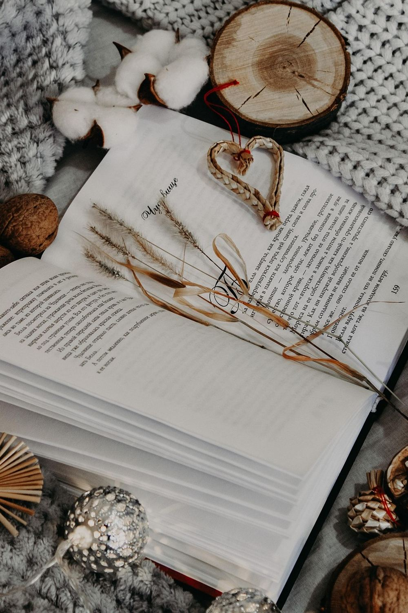

November 6, 2026 · By Pixel Punk Studio
Autumn takes away a lot of small things at once. The garden is finished, the daily walk is too cold or too dark, and the bench outside the shop isn't where the neighbors meet anymore. For many older adults the days get longer indoors just as they get shorter outside. The answer is not to fill every hour, but to give the week a few cozy things to look forward to, the kind you can do in a chair by the window with a warm drink.
9 cozy fall activities to do at home
- A fall word search with the morning coffee. Apples, acorns, cider, scarecrow: a seasonal puzzle in large print makes a calm, ten-minute ritual.
- Bake something with apples. An apple crumble or baked apples fill the house with the smell of fall, and someone usually wants the recipe.
- Watch the birds. A feeder outside the window brings visitors every day; a simple bird guide turns it into a game of spotting.
- Press leaves. A few colorful leaves between the pages of a heavy book become bookmarks, cards or a small frame.
- Start a fall playlist of old favorites, or listen to a radio play in the afternoon.
- Sort the photo box. One envelope a week, with names and years written on the back for the grandchildren.
- Plant bulbs in a pot on the windowsill: amaryllis or paperwhites to bloom by Christmas.
- Write letters or cards to old friends, one a week, before the holiday rush.
- A weekly phone date at the same time with a friend or grandchild, to talk about the puzzle, the recipe or the birds.

Build a simple autumn routine
- Morning light: open the curtains wide and sit by the brightest window first thing.
- A short walk at noon, when it is warmest, even just around the block or the hallway.
- One project a week: baking, the photo box or the bulbs, so each week has something new.
- A quiet hour in the afternoon with a puzzle, a book or music.
- Lamps on early, before it gets dark, so the evening feels cozy rather than gloomy.

Make activities easier on hands and eyes
- Choose large print puzzles and print free pages bigger if needed.
- Use a lap tray or a clipboard, so puzzles and cards are easy to hold in an armchair.
- Thicker pencils and felt-tips are easier to grip than thin pens.
- Good light from the side, and a magnifier on the table for small print.
- Short sessions: ten or fifteen minutes is plenty, and the puzzle will still be there tomorrow.
Print a fall puzzle today
Our free fall word search is ready to print on letter paper, with its answer key, and the cozy hygge puzzle and the jumbo print page are there for the colder weeks ahead. For a whole season of morning puzzles, Crisp Leaves Fall Word Search and Cozy Winter Hygge Word Search have dozens more, and Jumbo Christmas Word Search prints every letter at 30 points for the eyes that need it.